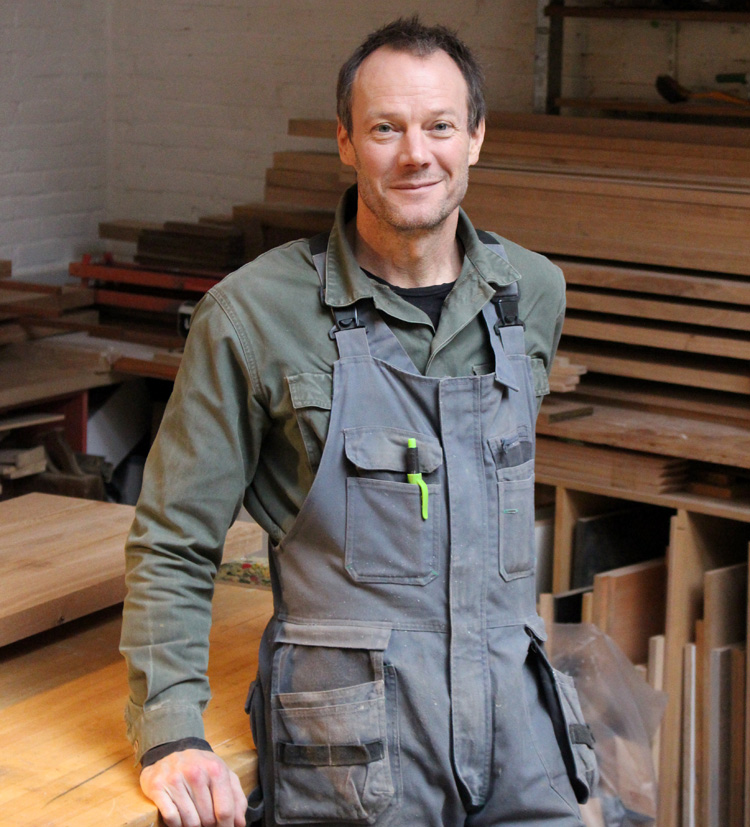

I build custom interiors and kitchens, built-in cabinets and free-standing furniture. I use solid wood, veneers, metal, stone and plastics: each material has a beauty and a place, each material requires an understanding of its strengths and weaknesses, both visual and mechanical.
My career began in 1988 in San Francisco, building houses for a custom builder. As my ability to construct things grew I began sketching designs for furniture and lighting and in 1991 I began working for myself, building custom furniture in the backyard of my Haight street apartment, selling to shops and individuals.
In 1994, after tiring of the trials of an outdoor workshop, which are many, I joined the San Francisco Carpenters union local 22, and finished my apprenticeship building the interior of the Eddie Bauer store in downtown SF. I then worked several years for a company called Design Workshops, installing ultra-high-end interiors in investment and law firms in SF and Silicon Valley. While visiting friends in Amsterdam in 2004 I found an opportunity to open a workshop and took it.
Each project is different because each client is different. The ability to quickly adapt and understand different needs and constraints is important. A project may require following a drawing to exact detail or it may require that I invent a piece or an interior from scratch.
Brian Sutter
Spaarndammerstraat 32N
1013 SW Amsterdam / look it up
06 – 15 13 54 52
